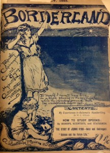

The Spiritualist Movement began in the 19th century and persisted into the early 20th century. It was characterized by a pop culture fascination with mediums and séances, and patronized by a number of otherwise prominent individuals including Sir Arthur Conan Doyle. It was especially popular amongst certain segments of the wealthy population, who would gather friends together and hire mediums to perform séances for entertainment. Another popular activity was attending demonstrations of spirit rappings and other mysterious phenomena. Spirit rappings purportedly allowed one to communicate with unseen beings based on tapped out responses. Many individuals became famous for their ability to communicate with spirits in this way, but quite a few were revealed as frauds. At least one woman was discovered to have been faking spirit responses by producing a rapping noise against the floor from underneath her skirt.
Sir Arthur Conan Doyle
New York: George H. Doran, 1921 [First edition.]
Summary: Though he is best known as the creator of Sherlock Holmes, Sir Arthur Conan Doyle was a devout spiritualist. After suffering the losses of his wife, son, and a nephew, Doyle turned to spiritualism, seeking proof of the afterlife. This volume is functionally a journal of his travels around the world with his second wife, documenting spiritualist conferences he attended and spoke at and séances he took part in. In the book, Doyle expresses the belief that spiritualism is compatible with Christianity and most religions. In his lifetime, Spiritualism was an extremely controversial topic. Many people felt Spiritualism was an affront to Christianity. Doyle and a few other well-known members of the spiritualist community were key figures in defending the movement’s legitimacy.
R. H. Benson
London: Hutchinson & Co., 1909
Summary: Benson was an ordained Catholic priest. This novel is about a young man engaged to a young lady who dies before they can marry. He becomes involved in the world of spiritualism and the occult in an effort to make contact with his departed fiancé. While it could be considered an American Gothic novel, Benson likely intended this novel as a cautionary tale against Spiritualism.
Emma Hardinge Britten
New York: Lovell & Co., 1884 [First edition.]
Summary: “A Complete Historical Compendium of the Great Movement Known as “Modern Spiritualism.” Emma Hardinge Britten and her husband were prominent members of the Spiritualist community in their time. Britten claimed to be clairvoyant an regularly led séances. This (large) book surveys spiritualism across the globe.
Edmund Gurney, Frederic W. H. Myers, and Frank Podmore
London: The Society for Psychical Research, 1886
Summary: These two volumes include a record of paranormal incidents collected by the society for psychical research. The stories inside were submitted by outsiders but supposedly verified by society researchers. The book also includes information on experiments conducted by the SPR on topics such as thought transference.
Initiations and Initiates in Tibet
Alexandra David-Neel
New York: University Books, 1959 [First edition.]
Summary: The author, Alexandra David-Neel, spent much of her life in Tibet and became extremely well acquainted with Tibetan culture and mysticism. This book discusses the study of Tibetan mysticism, some of the basic tenets of the belief system, how one comes to study under a lama, so on. This is not her only book about Tibet.
Sir Hesketh Bell
London: Edward Arnold & Co, 1948 [First edition.]
Summary: About witches, sorcery, and superstitious beliefs in the Caribbean. Written while Bell lived abroad during World War II. An interesting look at spiritualism in Caribbean cultures, this book provides a counterpoint to spiritualism as it was experienced in the US and Europe.


{kind=link}